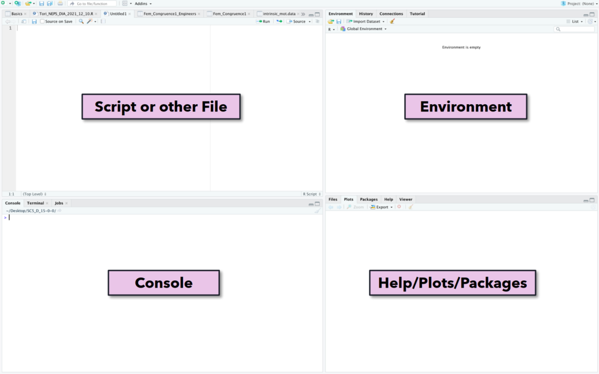
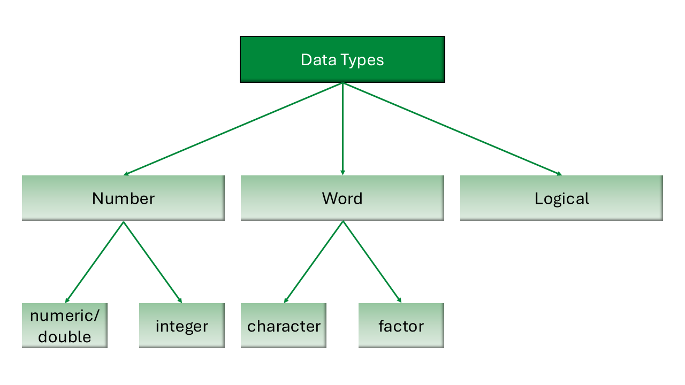

[1] FALSE[1] TRUE28/08/2025
Possible roles using the CRediT contribition system:
Conceptualization: Ideas; formulation or evolution of overarching research goals and aims
Methodology: Development or design of methodology; creation of models
Software : Programming, software development; designing computer programs; implementation of the computer code and supporting algorithms; testing of existing code components
Validation: Verification, whether as a part of the activity or separate, of the overall replication/ reproducibility of results/experiments and other research outputs
Formal analysis: Application of statistical, mathematical, computational, or other formal techniques to analyze or synthesize study data
Investigation: Conducting a research and investigation process, specifically performing the experiments, or data/evidence collection
Resources: Provision of study materials, reagents, materials, patients, laboratory samples, animals, instrumentation, computing resources, or other analysis tools
Data Curation: Management activities to annotate (produce metadata), scrub data and maintain research data (including software code, where it is necessary for interpreting the data itself) for initial use and later reuse
Writing - Original Draft: Preparation, creation and/or presentation of the published work, specifically writing the initial draft (including substantive translation)
Writing - Review & Editing: Preparation, creation and/or presentation of the published work by those from the original research group, specifically critical review, commentary or revision – including pre-or postpublication stages
Visualization: Preparation, creation and/or presentation of the published work, specifically visualization/ data presentation
Supervision: Oversight and leadership responsibility for the research activity planning and execution, including mentorship external to the core team
Project administration: Management and coordination responsibility for the research activity planning and execution
Funding acquisition: Acquisition of the financial support for the project leading to this publication
Prerequisites
Before completing this submodule, please carefully read about the necessary prerequisites.
| Prerequisite | Description | Link/Where to find it |
|---|---|---|
| Topic Name | Basic intro to X | Module + Submodule |
| Software Name | Configuring the environment | Download Link |
Overview of what will happen (make this slide in the end)
mention they should already have R and RStudio installed
outline the structure and general idea (hands-on, follow-along etc…)

Open RStudio and check if you can see everything that’s on the slide (might be only three panes)
| Symbol | Operation |
|---|---|
+ |
Addition |
- |
Subtraction |
* |
Multiplication |
/ |
Division |
^ |
Exponentiation |
sqrt() |
Square Root |
log() |
(Natural) Logarithm |
Use the table on the previous slide to run the following math operations directly in the console (bottom left).
\(12+17\)
\(\frac{218}{3}\)
\(357^2\)
Hint: You can run code from the console by pressing Enter.
Check if two numbers are equal or unequal
Check if a number is larger or smaller than another number
Example:
R returns a logical value:
TRUE or
FALSE
| Symbol | Operation |
|---|---|
== |
Equals |
!= |
Not Equal |
> and < |
Greater and Lesser Than |
>= and <= |
Greater Than or Equal / Less Than or Equal |
& |
logical AND |
| |
logical OR |
! |
logical NOT |
TRUE or FALSE?
Express the following statements in words and evaluate whether they are correct or not. Check your answers by running the statements in the console.
TODO: decide whether there should be another exercise that involves writing code to express a written statement

Two numeric variables can be summed up:
A numeric and a character variable cannot be summed up:
Easy way to save and share code you wrote
You can run code from an R script by pressing Ctrl + Enter (Windows) or
To comment your code use #, for example:

Create a new R Script with only a comment in the first line and save it in a fresh folder.
Everything in R is an object
Oftentimes, we want to work with an object repeatedly
Assign a name to an object using the assignment arrow <-
For Example:
my_numberin the environment of R Studio
maybe include instructions on a live demonstration? so that participants can see the object “my_number” appear in the environment pane.
Aim: End lesson on clear take-home message that are interactively compiled by students.
Tip with Title
Add one practical tips or take-home message.
What is your level of familiarity with [Topic] (e.g., basic concepts, terminology, or tools)?
I have never heard of it before.
I have heard of it but have never worked with it.
I have basic understanding and experience with it.
I am very familiar and have worked with it extensively.
Which of the following concepts or skills do you feel most confident about in relation to [Topic]? (Select all that apply)
Concept 1
Concept 2
Concept 3
Concept 4
I am not sure about any of these concepts.
On a scale of 1 to 5, how comfortable are you with using [specific tool/technology] related to [Topic]? (1 = Not comfortable at all, 5 = Very comfortable)
1
2
3
4
5
See you next class :)

LMU Open Science Center